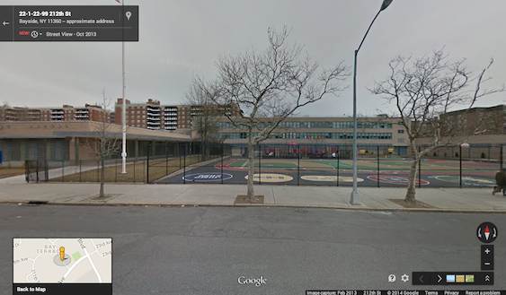
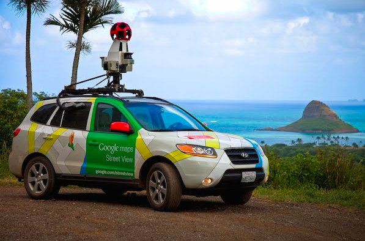

Using Street View
Today we are going to continue using Google Maps, but this time we are going to focus on "Street View". Street View is a way of seeing a place from Google Maps the way it looks when you are standing on the street. When you see our school in Street View, it looks just like it does to us when we are standing outside of it. Here is the Google Maps Street View Picture of our school
When we are looking at Google Maps in regular Satellite View, we see pictures of the world taken from space. In Street View, we see pictures taken from a special car that Google makes. This car drives down every street, and takes pictures using a set of cameras on it's roof. The driver doesn't even need to snap the pictures. The camera takes the pictures automatically.
To use Street View, we zoom into the area that we want to look at, and drag the Street View man over the map. The parts of the map that turn blue are the streets that the Google Car has driven over. Once you are in Street View, you can move further down the street by clicking where you want to go with the mouse. If a street doesn't turn blue, it means we can't see it in Street View, because the Google car hasn't been there yet.
Today's Task
Today you are going to be practicing using Streetview. You will go to Google Maps, and take 3 Screenshots of your country. When you are done, find the pictures on the desktop and rename them "Street View 1", "Street View 2", and "Street View 3". Then put them into the folders you made last week. Then fill out the form below.